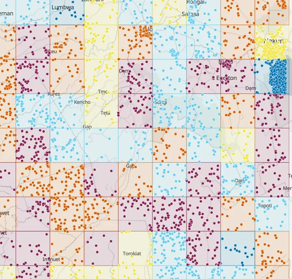

GeoValidate
The basemap could not load. The analysis still works.
Drop your labelled points. GeoValidate tests the same Random Forest on random points and on whole unseen areas, and shows the gap. Your data never leave your computer.
